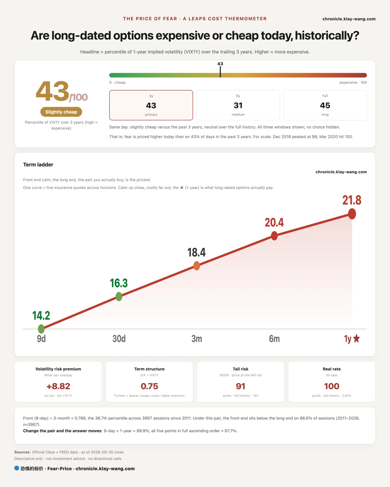
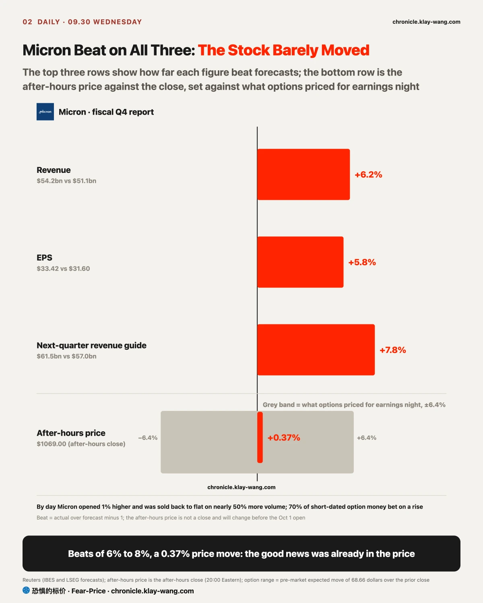
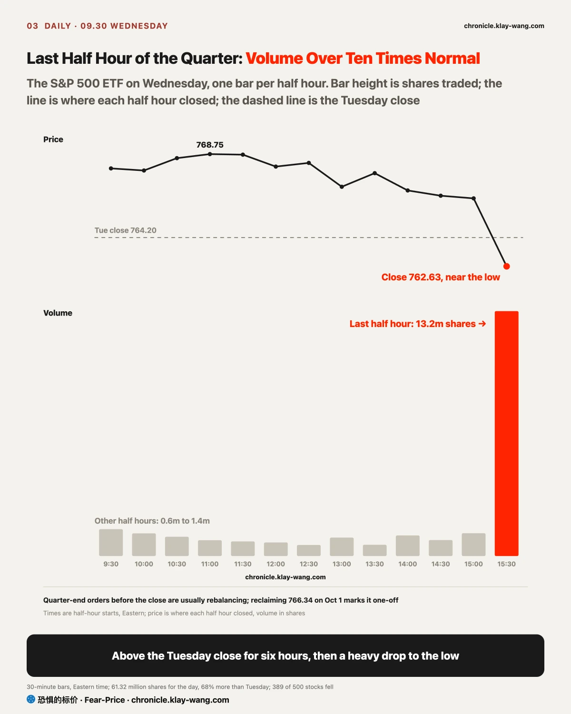
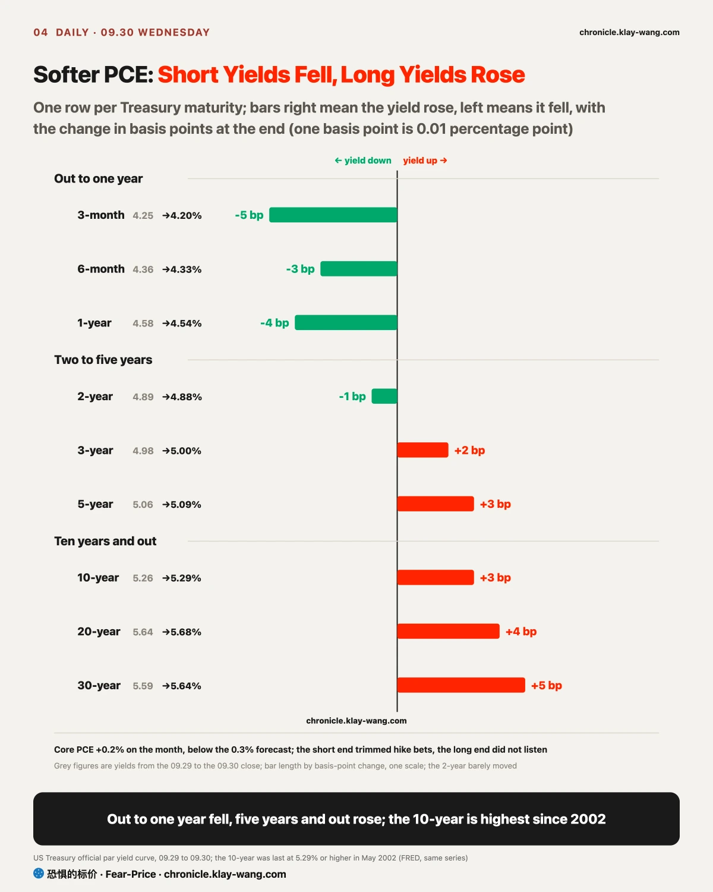

Fear-Price Index · 2026-09-30 · Reading 42.9/100: one-year volatility VIX1Y is 21.80, at the 42.9th percentile of the past three years; higher means more expensive. Daily ledger and method → chronicle.klay-wang.com · Please cite: Fear-Price Index
The cost of one-year insurance on US stocks rose from 40.3 to 42.9 on Wednesday (out of 100, higher is dearer), and all of that came from the late drop; it was flat through the session, and if the late loss is recovered on October 1 this rise should fade too. Across September it ended cheaper than it began: rates rose half a percentage point, and the stock market paid no extra for insurance against it. For you, protection is still priced in the lower-middle of its three-year range; if you hold tech that ran up in September, locking in gains with one-year protection costs less now than a month ago.
The K Index is 1.887, above the Tuesday final of 1.799. The closer K is to 1, the more people are turning worry into money spent on protection; it is far from 1 now, with plenty of talk of fear and few actually buying protection. On the current Fear & Greed reading, the VIX would need to rise above 30.8 for K to fall below 1. History at chronicle.klay-wang.com/kindex; the index at chronicle.klay-wang.com/fear-price.

The report Micron delivered after the bell on Wednesday was hard to fault: revenue and earnings per share beat forecasts, and next-quarter revenue guidance came in about 8% above them. After hours the stock fell to 1040 dollars, then climbed back to 0.37% above the close. Options had priced a move of 6% to 7% for earnings night, and it moved a fraction of a point: beating on everything without rising means the good news was already in the price, after Micron rose more than 10% in September. Trading during the day said so in advance: Micron opened higher, was sold back to flat on nearly 50% more volume than Tuesday, someone selling at the highs before the report. If you hold Micron, the report gave no fresh reason to rise; on the morning of October 1, watch how many of the bullish options that took 70% of short-dated money during the day are still held, since few left means the money betting on the report has gone. Stock page at chronicle.klay-wang.com/t/MU.
In the same sector, money is still chasing Intel: it rose 3.71% on Wednesday and closed near its high, up more than 30% in September, while its one-month insurance keeps getting dearer. Buyers are chasing and insuring themselves at the same time, a position that still expects gains but fears a pullback. The server CPU story got fresh support: Synopsys signed a chip design licensing deal with Amazon worth more than 1 billion dollars, with fees tied to shipments of chips Amazon designs itself, so the more the big companies build their own chips, the more the design sellers earn; Synopsys rose 4.78% on the day. On Nvidia the money is moving up: two older November call strikes and two higher new ones each traded about 70000 contracts in matching counts, which looks like the mid-September bets raising their targets, not new money coming in; settled open interest on the morning of October 1, the contracts still held the next morning, will confirm it.

Many big stocks rose all day on Wednesday and then dove together in the last half hour: Alphabet, Meta and Nvidia each fell about 1% in that half hour, Microsoft and Apple about 0.8%, and the S&P 500 ETF lost its whole day of gains to close at the low. If you hold these names, first tell one thing apart: is someone fleeing, or is this a mechanical order that has to run at a set time? By the tape, it was mostly the latter, quarter-end rebalancing.
There are three pieces of evidence. First, the size of the drop lined up with index weight: the bigger the weight, the more it fell in that half hour and the more its volume swelled, with Alphabet and Microsoft trading four to five times a normal half hour, while the equal-weight S&P and small caps fell only about a third of a percentage point. Intel, the best performer of September, actually rose; it is a small weight and not in the selling. Someone selling on a bearish view picks particular stocks and does not line up by market value. Second, in the same half hour long and mid-term Treasuries rose: stocks sold, bonds bought. Stocks rose and bonds fell this quarter, so the share of stocks in portfolios grew on its own, and at quarter end they sell stocks and buy back bonds, exactly this direction. Third, the S&P 500 ETF traded more than ten times a normal half hour while single stocks traded three to five times, so the selling came as a whole basket, on a day with no news.
What amplified the drop was options expiring the same day. Same-day puts on Nvidia at 230, Apple at 335 and Alphabet at 350 traded from tens of thousands to 300000 contracts on Wednesday. As prices approached those strikes, whoever sold the puts had to sell stock to hedge, selling more the further prices fell; Nvidia closed at 228.38, Apple at 333.02 and Alphabet at 344.08, each just below those strikes. Tesla went the other way: more than 200000 of its same-day 350 calls traded, and it closed at 350.68, edging up into the close.
So the Wednesday close for the big names deserves a discount. Normally the last hour says the most about who is leaving, but the last day of a quarter mixes in a lot of orders that ignore price. Several other readings in the market today point the same way: money in Nvidia November calls is moving up, not leaving; the cost of insuring banks fell; and the 2.6-point rise in the Fear-Price Index came entirely from this late drop. The real test is October 1: if the market quickly recovers this half hour after the open, it was a one-off rebalance and the big names are still holding; if it keeps falling on heavy volume, someone is using quarter-end to sell. What deserves attention is underneath: 389 of the 500 stocks fell, the ratio of the equal-weight to the cap-weight S&P is at a 60-day low, and the S&P has been held up this month by fewer and fewer big names; that one mechanical order could knock them to the low of the day says the buyers willing to bid up during the day were thin to begin with.
The two other groups that fell hardest late had nothing to do with rebalancing; each has its own story. Brokers and crypto stocks were cashing in good news: Robinhood had launched an agent that can place trades while the user is offline a day earlier; on Wednesday it opened 5.5% higher, was sold all day and closed down 3.20% on 2.3 times the Tuesday volume, the textbook shape of selling into strength, with holders who were already in using the launch as their exit. Payments and banks were a slow bleed: Mastercard and Visa closed at their lows, bank shares sat at theirs, and one-month insurance on banks got cheaper; sellers are not panicking and holders are not fleeing, so this kind of decline usually moves slowly and has not reached a panic washout.

August PCE, released Wednesday, is the inflation gauge the Fed watches most, and on the surface it beat forecasts: core inflation was 3.0% on the year against 3.3% expected. But most of that gap came from the statistics bureau changing how it prices legal services, software and portfolio management, and July was revised to 3.0% as well; measured with the same ruler, inflation did not fall. The only true beat was 0.1 percentage point on the monthly rate. In the same report, American households spent much faster than they earned, and inflation-adjusted spending rose the most in any month since March 2025.
The bond market heard the report in two halves. Every Treasury yield out to one year fell, as the market trimmed its bet on another hike in October, with futures odds down from about half to 47%; every yield from five years out rose, taking the 10-year to 5.29%, above the 2007 peak and the highest since 2002. The short end watches the next Fed move; the long end prices the compensation for lending money out for ten years. Oil rose nearly 2% on the day, spending is accelerating, and Minneapolis Fed President Neel Kashkari said after the close that inflation is still too high, so lenders had no reason to ask for less.
Borrowers end up paying that compensation, and that is the most direct effect on you. Mortgages, car loans and business loans follow the 10-year and are not coming down even as inflation data improves; anyone waiting for rates to fall before borrowing got dearer money in September. If you have spare cash, one-year Treasuries pay about 4.5%, and short bonds rise on days like this; long bonds are still falling. Some are betting on a rebound: calls expiring at the end of November that pay off if long bonds climb back about 7% in just over a month traded nearly 100000 contracts on Wednesday, close to 30 times the open interest, but those bets are still losing.
My read is that term compensation, not rate-hike expectations, is pushing the 10-year up, and Wednesday added a day of evidence to the September 29 call. If at the October 1 close the two-year yield is back at 4.92% or higher and has risen more than the 10-year, that read no longer holds.

On September 16 we wrote that a block of money in the bond market was betting rates had peaked and long bonds would rebound. On its terms the call stands: the long-Treasury fund broke below 80, and the bullish calls were not dropped; open interest rose from 152000 on September 17 to 206000 at the September 29 settlement. The bet itself is losing so far, with those calls worth 9 cents at the Tuesday close; the holders are moving strikes down and dates out, not giving up. For you, it means the slide in long bonds has not yet forced the rebound bettors to give up, and there is no sign of a bottom yet.
On September 9 we cited five outside claims that chips might turn up again; checked at month end, three held. Seasonality, momentum and falling chip volatility all played out, with the semiconductor ETF up 12% since September 15; a collective breakout in memory did not, with only Micron above its September 9 level; hedge funds borrowing more to invest has no public number to check and stays undetermined.
Two more settle on October 1, and both still stand on the current data. The rate shock has not reached credit: insurance on banks did not get dearer, and the extra interest AI-linked companies pay on their bonds rose a little, still more than 8 basis points from the overturn line but moving toward it. The low-volume slide in memory was an absence of buyers: Micron traded heavily before its report but closed flat, so it was not triggered. On September 29 we asked whether Meta could hold 727.50; it closed Wednesday at 725.18, back below, but on volume 20% lighter than Tuesday, a lack of buyers; the next test is whether it can climb back on light volume.
If you hold long Treasuries or long bond funds: better inflation data did not bring long rates down, and prices are still falling; the rebound bettors keep adding but have not made money. For stability, Treasuries out to one year and short bonds rise on days like this.
If you hold big tech: the late dive on Wednesday was mostly mechanical quarter-end orders, so do not read this close as a turn. Watch the first hour after the open on October 1; if the loss is not recovered, more than rebalancing money was selling.
If you hold chip or memory stocks: the good news on Micron is already in the price; Intel is still being chased, but the chasers are buying protection themselves, which says everyone knows it has run.
If you hold brokers, payments or banks: Robinhood was sold into strength after its launch; payments and banks are sliding slowly with no panic, a decline that is not urgent and not likely to stop right away.